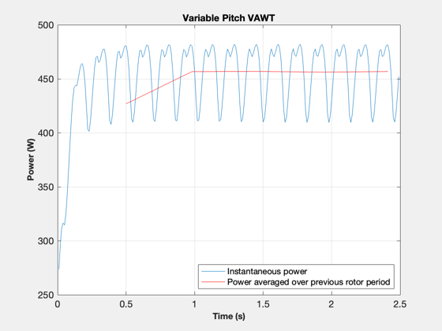
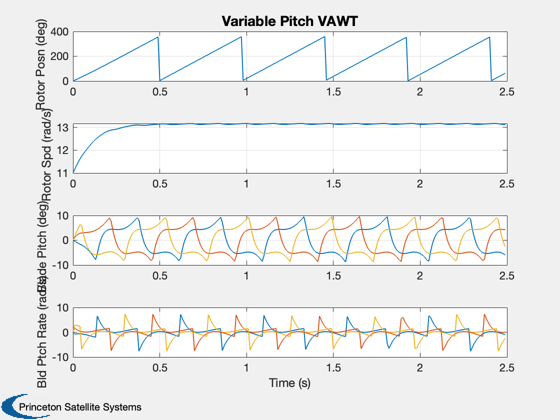
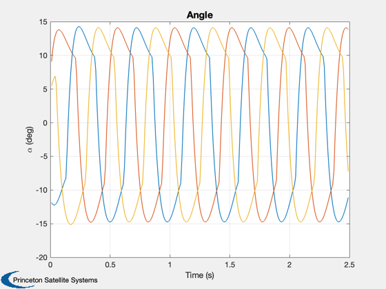

VAWT Simulation.
Running the simulation which only models the mean wind. Generator control torque chosen to achieve desired rotor angular speed. Active blade pitch control attempts to regulate the angles of attack of individual blades to a prescribed desired value for maximizing total rotor driving torque.
------------------------------------------------------------------------ See also NewFig, Plot2D, TitleS, XLabelS, YLabelS, PowCompAnlytBsd, sign2, WindStochastic ------------------------------------------------------------------------
Contents
%-------------------------------------------------------------------------- % Copyright (c) 2008, 2010 Princeton Satellite Systems, Inc. % All rights reserved. %-------------------------------------------------------------------------- t1 = now;
Simulation parameters
%----------------------
delT = 0.01;
simlen = 249;
Model parameters
%----------------- d.R = 0.75; % Radius of turbine d.rho = 1; % Wind density in SI units d.A = 2; % Reference area d.Jr = 3;% Moment of inertia of the rotor assembly d.Jb = (1/12)*(1e-2+1e-3); % Moment of inertial of each individual blade about its pitching axis d.beta = 0; d.startup = 0.01; % Wind power to torque at startup d.nBlades = 3;
Wind model
%----------- d.tau = 1; d.n = 3; % blades/harmonics d.dT = delT; d.sigmaWind = 0.5; wMean = 6; d.dTF = d.R/wMean; windFactor = 0*0.3; omegaWind = 10; d.wMean = wMean; d.wHarm = 0.01; WindStochastic( 'init', d ); VWind = d.wMean/3.6; % Converting wind speed to m/s d.VWind = VWind;
Control Parameters
%------------------- d.alprefmag = 14*pi/180; % Reference angle of attack in radians d.Omdes = 12; % Desired rotor angular velocity phi = 0*pi/180; % Initial rotor angle Omg = 11; % Initial rotor angular speed gam1 = 0*pi/180; % Initial pitch angle of blade 1 gam1Dot = 0; % Initial pitch angle rate of blade 1 gam2 = 0*pi/180; % Initial pitch angle of blade 2 gam2Dot = 0; % Initial pitch angle rate of blade 2 gam3 = 0*pi/180; % Initial pitch angle of blade 3 gam3Dot = 0; % Initial pitch angle rate of blade 3 Xr = Omg*d.R/VWind; % Initial tip speed ratio
Relative velocity components for individual blades
%----------------------------------------------------
W1 = VWind*sqrt((Xr-sin(phi))^2 + (cos(phi))^2);
W2 = VWind*sqrt((Xr-sin(phi+2*pi/3))^2 + (cos(phi+2*pi/3))^2);
W3 = VWind*sqrt((Xr-sin(phi-2*pi/3))^2 + (cos(phi-2*pi/3))^2);
Angles of attack of individual blades
%--------------------------------------
alp1 = asin(cos(phi)/sqrt((Xr-sin(phi))^2 + (cos(phi))^2));
alp2 = asin(cos(phi+2*pi/3)/sqrt((Xr-sin(phi+2*pi/3))^2 + (cos(phi+2*pi/3))^2));
alp3 = asin(cos(phi-2*pi/3)/sqrt((Xr-sin(phi-2*pi/3))^2 + (cos(phi-2*pi/3))^2));
Simulation loop
%---------------- tSto = zeros(simlen+1,1); StsSto = zeros(simlen+1,8); PowSto = zeros(simlen+1,1); alpSto = zeros(simlen+1,3); StsSto(1,1) = phi; StsSto(1,2) = Omg; StsSto(1,3) = gam1; StsSto(1,4) = gam1Dot; StsSto(1,5) = gam2; StsSto(1,6) = gam2Dot; StsSto(1,7) = gam3; StsSto(1,8) = gam3Dot; PowSto(1,1) = 0; alpSto(1,1) = 0; alpSto(1,2) = 0; alpSto(1,3) = 0; AvgPow = []; AvgPowTm = []; AvgPowId = 1; k = 0; x = [phi Omg gam1 gam1Dot gam2 gam2Dot gam3 gam3Dot]; % Initial state vector for i = 1:simlen d.phi = phi; % rotor angle at the start of the time step [t,x] = ode45('VAWTDemoBldMdlRHS',[0 delT], x, [], d); x = x(length(x),:); phi = x(1); Omg = x(2); gam1 = x(3); gam1Dot = x(4); gam2 = x(5); gam2Dot = x(6); gam3 = x(7); gam3Dot = x(8); tSto(i+1) = tSto(i) + delT; StsSto(i+1,1) = mod(phi*180/pi,sign2(Omg)*360); StsSto(i+1,2) = Omg; StsSto(i+1,3) = mod(gam1*180/pi,0); StsSto(i+1,4) = gam1Dot; StsSto(i+1,5) = mod(gam2*180/pi,0); StsSto(i+1,6) = gam2Dot; StsSto(i+1,7) = mod(gam3*180/pi,0); StsSto(i+1,8) = gam3Dot; [PowSto(i+1,1),alpSto(i+1,:)] = PowCompAnlytBsd(tSto(i+1),x,d); if abs(phi) > 2*pi*k AvgPow = [AvgPow;mean(PowSto(AvgPowId:i,1))]; AvgPowTm = [AvgPowTm;tSto(i+1)]; AvgPowId = i+1; k = k+1; end end
Plot results
%------------- NewFig('Fixed Pitch VAWT') plot ( tSto(2:simlen+1), PowSto(2:simlen+1)) grid on hold on plot(AvgPowTm(2:length(AvgPowTm)),AvgPow(2:length(AvgPowTm)),'r') XLabelS('Time (s)') YLabelS('Power (W)') legend('Instantaneous power','Power averaged over previous rotor period','location','southeast') TitleS('Variable Pitch VAWT') yL = {'Rotor Posn (deg)' 'Rotor Spd (rad/s)' 'Blade Pitch (deg)' 'Bld Ptch Rate (rad/s)'}; Plot2D( tSto', StsSto', 'Time (s)',yL,'Variable Pitch VAWT','lin',{'1' '2' '[3 5 7]' '[4 6 8]'}); Plot2D( tSto(2:simlen+1)',alpSto(2:simlen+1,:)'*180/pi, 'Time (s)','\alpha (deg)','Angle'); disp('Average Power in Watts: '), disp(mean(PowSto)) %-------------------------------------- % PSS internal file version information %-------------------------------------- % $Date$ % $Id: e347ed681a8fbee2bde3aad06a9a925bbe1860a5 $
Average Power in Watts:
448.46
  